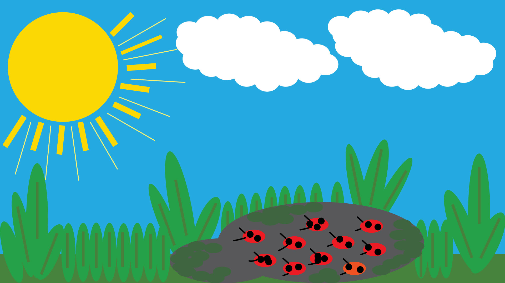
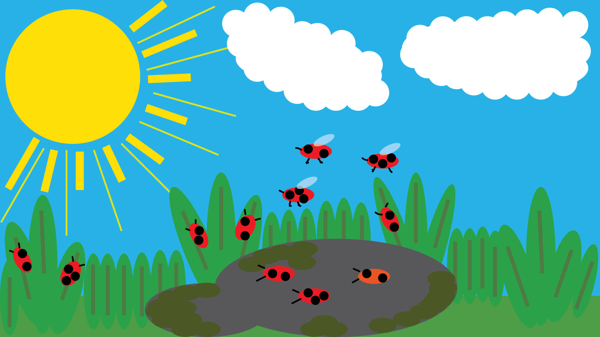
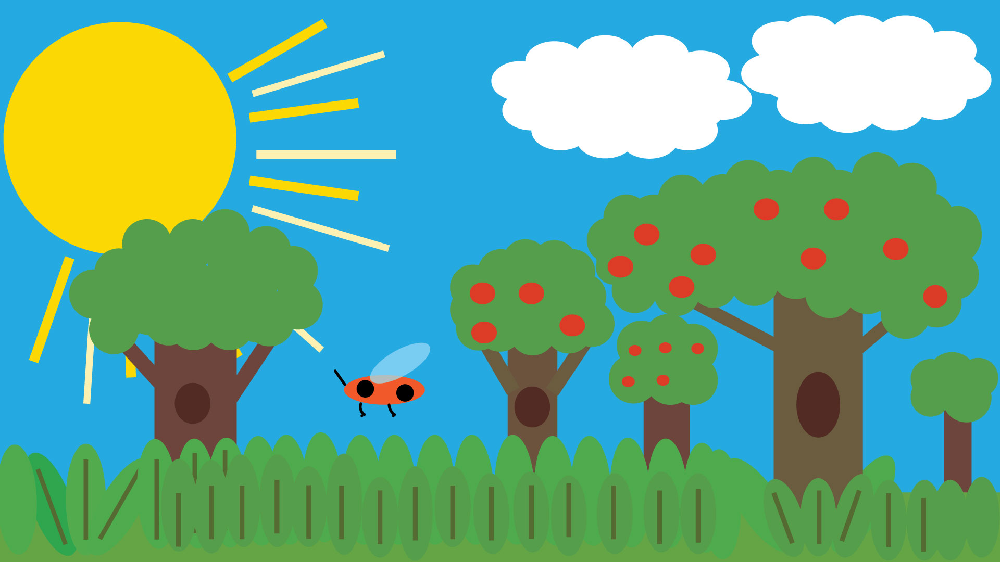
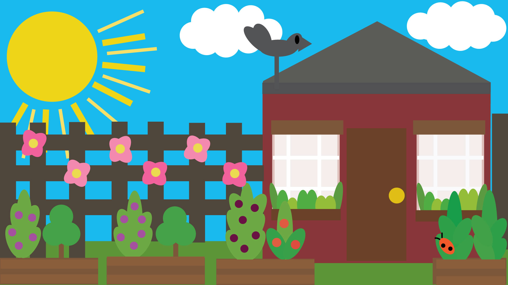
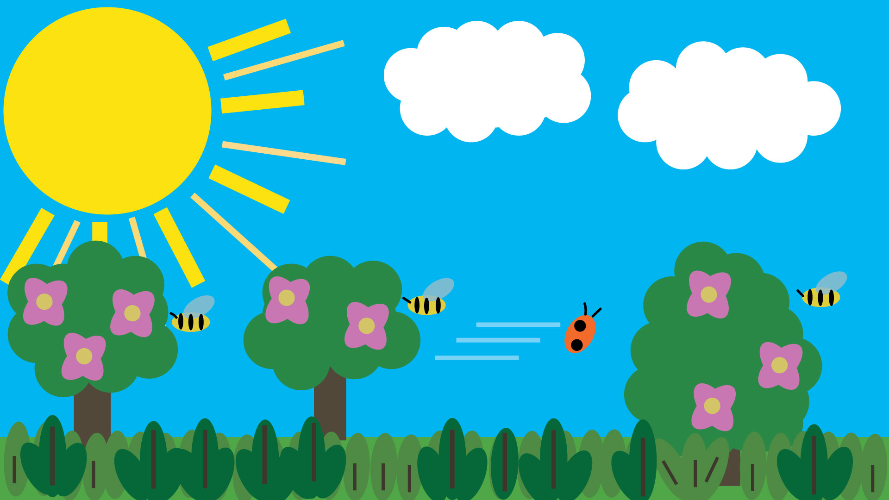
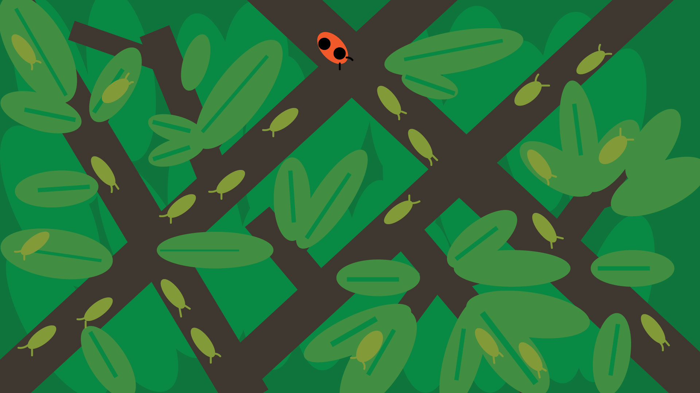
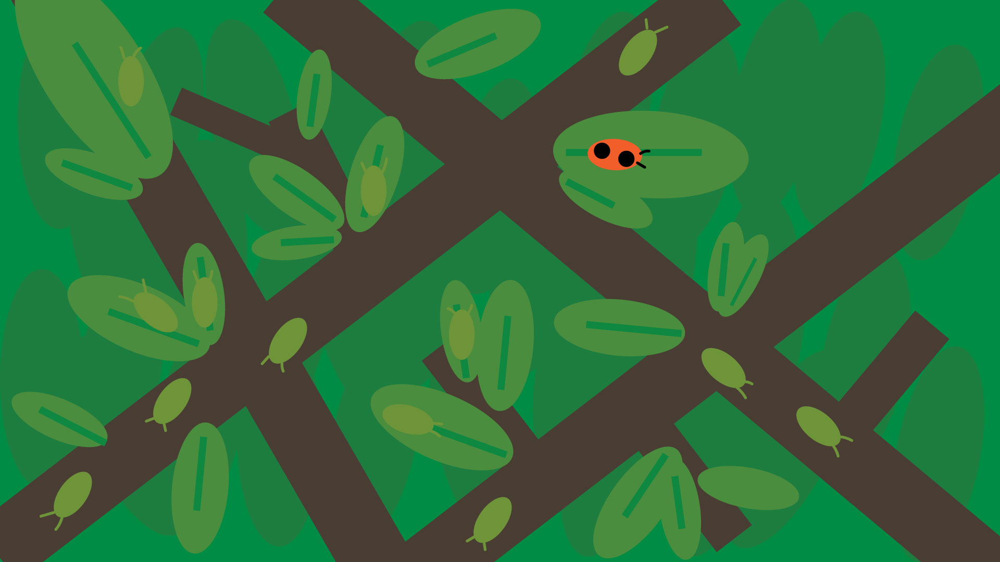

This story follows a Ladybug named Mina and the obstacles she faces that prevent her from satisfying her hunger. After waking up from her fall hibernation, we accompany Mina in her journey of perseverance. I made this story because it's normal to struggle and face obstacles to achieve your desires. However, either by chance or dedication, it can be achieved.
      Credits: All images by Serafina Muniz,2021. “bird sounds.wav” by paulmessier. CC BY 3.0. Freesound.org. April 20, 2015.https://freesound.org/people/paulmessier/sounds/271184/ “People Hungry Stomach” by Mafon2. CC BY 3.0. Freesound.org. August 30, 2014 https://freesound.org/people/Mafon2/sounds/245822/ “Crunch noise” by Hourofmidnight. CC BY-NC 3.0. Freesound.org. October 22, 2015 https://freesound.org/people/Hourofmidnight/sounds/325654/ “Wind Gust” by crashoverride61088. CC0 1.0. Freesound.org. February 18, 2012 https://freesound.org/people/crashoverride61088/sounds/146932/ “Happy music” by LagMusics. CC0 1.0 Freesound.org. June 28, 2021 https://freesound.org/people/LagMusics/sounds/578231/